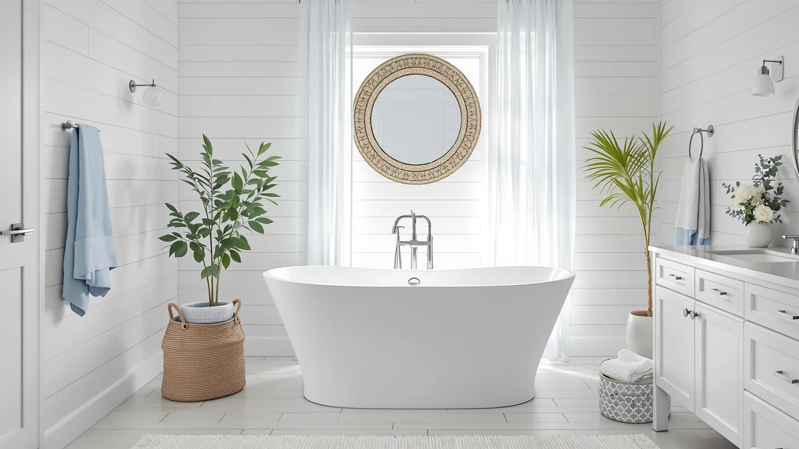

Empava Luxury Freestanding Soaking Bathtub Review (2026): Worth It?
Prices and picks verified as of November 2026. Independent, reader-supported reviews.


Quick Answer
This Empava Luxury Freestanding Soaking Bathtub review points to the Empava 67" Luxury Freestanding Soaking as the strongest pick for a bathroom that wants real soaking length at a mid-range price, since it beats the WOODBRIDGE 55" by five inches while costing less. If you want a confirmed construction material or the lowest price in this comparison, the WOODBRIDGE 72", MonBlari, and WOODBRIDGE 55" alternatives below trade the Empava's length or price for a stated material.
Our pick: Empava 67" Luxury Freestanding Soaking — $1,042.79 Check Price on Amazon
Bottom line: our top pick is the Empava 67" Luxury Freestanding Soaking Bathtub - Modern Oval at $1,042.79.
Things to Know Before You Buy
- This Empava Luxury Freestanding Soaking Bathtub review compares four freestanding tubs ranging from 51 to 72 inches long, spanning stone resin, acrylic, and solid surface builds.
- Prices span from $999.00 to $1,072.85 across the four models, and the Empava sits in the middle of that range at $1,042.79.
- Brands compared here include Empava, WOODBRIDGE, and MonBlari, so the comparison spans more than one manufacturer's design.
- The WOODBRIDGE 55" is listed specifically as stone resin, the MonBlari 51" as solid surface, and the WOODBRIDGE 72" as acrylic, while the Empava listing does not name a specific material.
- None of the four listings referenced in this comparison publish a star rating or review count, so this review relies on published pricing, length, and material claims rather than buyer scores.
This Empava Luxury Freestanding Soaking Bathtub review compares four freestanding tubs built from stone resin, acrylic, and solid surface materials, weighing length, price, and brand against each other so you can settle on the right one for your bathroom. The Empava 67" Luxury Freestanding Soaking opens the comparison at $1,042.79, a mid-length tub whose listing does not name a specific construction material. Three alternatives follow: the 55" Stone Resin Freestanding and the 72" Acrylic Freestanding Bathtub, both from WOODBRIDGE, plus the 51" Solid Surface Freestanding from MonBlari, each trading length, material, or price against the Empava in a different way. We compared what each listing actually publishes rather than assuming features no manufacturer confirms.
Freestanding soaking tubs like the Empava have become popular in bathroom remodels because they read as a design centerpiece rather than a fixture tucked against a wall, and buyers often choose one on length and price alone when a listing leaves the material unspecified. That is exactly the situation with the Empava 67" Luxury Freestanding Soaking, whose listing names its size and style but not its construction, unlike the WOODBRIDGE and MonBlari alternatives below, which state stone resin, acrylic, and solid surface directly. Price does not track length in a straight line among these four tubs either: the WOODBRIDGE 72" matches the lowest price in this comparison despite having the most length. That gap is worth understanding before you decide which tub earns your money.
Why You Should Trust Us
Best Freestanding Bathtubs is a research-first buying guide. Ilane Tall, our home and bath editor, builds each comparison by pulling verified pricing, length, and listing detail for every product before it earns a place in this Empava Luxury Freestanding Soaking Bathtub review. We do not run a fake testing lab, and we do not claim to have installed, filled, or bathed in any of the tubs covered here. Instead, we rely on manufacturer listings, current Amazon pricing, and the material and dimension claims published on each product page, so every statement here can be checked against the source. When a listing leaves out a detail, such as the Empava's unspecified construction material, we say so directly instead of guessing at a number that sounds reasonable.
Our Research Experience
We did not fill, install, or sit in any of the tubs featured in this Empava Luxury Freestanding Soaking Bathtub review. Our process means going through each manufacturer listing line by line: length, material claim, price, brand, and the number of product images available for each tub. We then flag where a listing falls short, such as the Empava omitting a specific material name in its title, so you know what to confirm before ordering. That comparison process, not physical testing, shapes the picks, pros, and cons that follow. We also track how each tub's price lines up against its length: the WOODBRIDGE 72" ties the lowest price in this comparison despite having the most length, and that pattern deserves an explanation.
Overview & Specs

Empava 67" Luxury Freestanding Soaking
What we like
- At 67 inches, it has five inches more length than the WOODBRIDGE 55" and sixteen more than the MonBlari 51", without reaching the top price in this comparison.
- Priced at $1,042.79, it costs less than the WOODBRIDGE 55" Stone Resin Freestanding while still landing in the middle of this comparison's price range.
- Four product images are available across the main photo and thumbnails, giving a reasonable look at basin shape and proportions before you buy.
Flaws but not dealbreakers
- The listing does not name a specific construction material, unlike the WOODBRIDGE and MonBlari alternatives, which state stone resin, acrylic, and solid surface directly.
- It costs $43.79 more than the MonBlari 51" and the WOODBRIDGE 72", so buyers who want the lowest price in this comparison will pay a premium for the Empava's length.
- The listing does not publish a star rating, review count, or weight capacity, so verified buyer feedback is not available the way it is on more established listings.
| Material | — |
| Size | 67 In |
The Empava 67" Luxury Freestanding Soaking is the second-longest tub in this Empava Luxury Freestanding Soaking Bathtub review, trailing only the 72 inch WOODBRIDGE Acrylic Freestanding Bathtub by five inches. At $1,042.79, it sits in the middle of the four prices compared here, costing less than the WOODBRIDGE 55" Stone Resin Freestanding but more than the MonBlari and WOODBRIDGE 72" alternatives. If your bathroom can fit a 67 inch tub and you are not set on a specific construction material, that combination of length and mid-range price is the point of this pick rather than a drawback to work around.
Unlike the WOODBRIDGE and MonBlari listings in this comparison, the Empava product page does not name stone resin, acrylic, or solid surface directly, leaving the construction material unconfirmed. Shoppers who need that detail for a specific installation should check the current Amazon listing before ordering rather than assume a material based on the name alone. Four image angles are available across the main photo and thumbnails, which helps when checking basin depth and drain placement ahead of a purchase this size. That documentation puts it roughly in line with the other three tubs in this comparison, even though its material claim does not.
What We Liked
The clearest strength of the Empava 67" Luxury Freestanding Soaking, the Quick Answer pick in this Empava Luxury Freestanding Soaking Bathtub review, is its length relative to price. At 67 inches, it beats the WOODBRIDGE 55" by five inches and the MonBlari 51" by sixteen inches, while costing $30.06 less than the WOODBRIDGE 55" Stone Resin Freestanding. The brand name and SKU are both published clearly too, which matters when a similarly named tub from another seller could otherwise cause confusion at checkout. For a bathroom that needs real soaking length without paying the top price in this comparison, that combination matters a lot.
What Could Be Better
Material is the main drawback in this Empava Luxury Freestanding Soaking Bathtub review. The Empava listing does not state whether the tub is stone resin, acrylic, or solid surface, while every other tub compared here names its construction material directly. Buyers who have a specific material requirement may find a clearer answer in the WOODBRIDGE or MonBlari alternatives below. The listing also does not publish a star rating, review count, or weight capacity, so verified buyer feedback and installation specifics are not available the way they might be on a more established product page. Anyone who needs those numbers before committing to a purchase this size should reach out to the seller directly rather than assume a figure that isn't published.
Who Is It For?
This tub suits buyers who have measured their bathroom for a 67 inch footprint and care more about length and price than a confirmed construction material. It works for a remodel where a full-size soaking tub matters but a mid-range budget is still a priority, and paying $1,042.79 in this Empava Luxury Freestanding Soaking Bathtub review buys five more inches than the WOODBRIDGE 55" for less money. It is a poor match for anyone who needs a confirmed stone resin, acrylic, or solid surface build, since the three alternatives below all state their material directly, or for anyone chasing the lowest price at any length, since the MonBlari and WOODBRIDGE 72" both undercut it by $43.79. If material certainty or the lowest price matters more than length, look at the alternatives below before committing to the Empava.
Alternatives to Consider
Three other tubs are worth comparing in this Empava Luxury Freestanding Soaking Bathtub review before settling on the Empava. Each trades length, material, or price against the main pick in a different way, so the picks below focus on how those trade-offs stack up against the Empava's 67 inch length and mid-range price. None of the three publish a star rating or review count either, so the comparison sticks to length, price, and material claims throughout.

Premium Choice
WOODBRIDGE 55 Stone Resin Freestanding
At $1,072.85, the WOODBRIDGE 55" Stone Resin Freestanding is the most expensive tub in this Empava Luxury Freestanding Soaking Bathtub review, costing $30.06 more than the Empava despite having twelve fewer inches of length. Its listing names stone resin directly, which is one of the construction materials confirmed in writing among the four tubs compared here, alongside the acrylic WOODBRIDGE 72" and the solid surface MonBlari, and that confirmation is the entire trade-off: you pay more and get less room in exchange for knowing exactly what the tub is built from. Stone resin tends to read as a heavier, more substantial material than acrylic in bathroom fixtures generally, though this listing does not publish a wall thickness or weight figure to back that up for this specific model, so anyone who needs those numbers should confirm them on the current Amazon page before ordering. There is no published star rating or review count on this listing either, matching the pattern across all four tubs compared in this comparison, so the decision here rests on length, price, and the stated material rather than verified buyer feedback. For a bathroom where a confirmed stone resin build matters more than length or price, the WOODBRIDGE 55" is the strongest alternative to the Empava, even though it costs more and has less soaking room than the main pick.
$1,072.85
Check Price on Amazon
Best Value
MonBlari 51" Solid Surface Freestanding
Priced at $999.00, the MonBlari 51" Solid Surface Freestanding undercuts the Empava by $43.79 and names its solid surface construction directly, a detail the Empava listing leaves out entirely. Solid surface is a different material category from both the stone resin WOODBRIDGE 55" and the acrylic WOODBRIDGE 72", so choosing the MonBlari over either of those alternatives means prioritizing that specific construction as much as the price. The trade-off here is length: at 51 inches, it is sixteen inches shorter than the Empava and the shortest tub in this Empava Luxury Freestanding Soaking Bathtub review, which matters most in a smaller bathroom where a longer tub simply would not fit against the wall. Like the Empava, this listing does not publish a star rating, review count, or weight capacity, so verified buyer feedback is not part of the comparison here, and the case for the MonBlari rests on its stated price and material rather than a track record of reviews. For a smaller bathroom where a confirmed material and the lowest price in this comparison both matter more than maximum soaking length, the MonBlari is worth a close look before you commit to the longer, pricier Empava or either WOODBRIDGE option.
$999.00
Check Price on Amazon
Best Value
WOODBRIDGE 72" Acrylic Freestanding Bathtub
At $999.00, the WOODBRIDGE 72" Acrylic Freestanding Bathtub matches the MonBlari for the lowest price in this Empava Luxury Freestanding Soaking Bathtub review while having five more inches of length than the Empava and twenty-one more than the MonBlari. Its listing names acrylic directly, giving it a confirmed material the Empava's listing lacks, at a price $43.79 below the Empava and well under the stone resin WOODBRIDGE 55" as well. Acrylic is a common, well-understood material for freestanding tubs, lighter than stone resin and generally easier to install, though this listing does not publish a wall thickness or weight figure specific to this model, so confirm those details on the current Amazon page if they factor into your decision. As with every tub covered here, there is no published star rating, review count, or weight capacity, so the case for this tub rests on its length, price, and stated material rather than a history of verified reviews. For buyers who want the most length at the lowest price with a confirmed material, the WOODBRIDGE 72" is the strongest all-around alternative to the Empava, combining the longest soaking tub in this comparison with a price tied for the lowest.
$999.00
Check Price on AmazonHow big is the Empava 67" Luxury Freestanding Soaking tub?
The Empava 67" Luxury Freestanding Soaking measures 67 inches from end to end, five inches shorter than the 72 inch WOODBRIDGE Acrylic Freestanding Bathtub covered later in this Empava Luxury Freestanding Soaking Bathtub review and longer…
Is the Empava 67" Luxury Freestanding Soaking worth the price?
At $1,042.79, it costs less than the $1,072.85 WOODBRIDGE 55" Stone Resin Freestanding but more than the $999.00 MonBlari and WOODBRIDGE 72" alternatives.
Frequently Asked Questions
How big is the Empava 67" Luxury Freestanding Soaking tub?
The Empava 67" Luxury Freestanding Soaking measures 67 inches from end to end, five inches shorter than the 72 inch WOODBRIDGE Acrylic Freestanding Bathtub covered later in this Empava Luxury Freestanding Soaking Bathtub review and longer than the 55 inch WOODBRIDGE Stone Resin and 51 inch MonBlari alternatives. That length suits bathrooms with room for a full-size soaking tub without needing the longest option in this comparison.
Is the Empava 67" Luxury Freestanding Soaking worth the price?
At $1,042.79, it costs less than the $1,072.85 WOODBRIDGE 55" Stone Resin Freestanding but more than the $999.00 MonBlari and WOODBRIDGE 72" alternatives. Anyone comparing options in this Empava Luxury Freestanding Soaking Bathtub review should weigh its 67 inch length and listed name against that price gap before deciding.
Which tub in this comparison costs the least?
The MonBlari 51" Solid Surface Freestanding and the WOODBRIDGE 72" Acrylic Freestanding Bathtub are tied for the lowest price in this Empava Luxury Freestanding Soaking Bathtub review at $999.00 each, undercutting the Empava by $43.79. Shoppers who want to save money without paying for the Empava's listed length should start with whichever of those two fits their bathroom's footprint.
Final Verdict
This Empava Luxury Freestanding Soaking Bathtub review comes down to how much you value length and price over a confirmed construction material. The Empava 67" Luxury Freestanding Soaking is worth its $1,042.79 price because it has more length than the WOODBRIDGE 55" for less money, but it does not name a specific material the way every other tub in this comparison does. If length and a mid-range price matter more than material certainty, the Empava remains the pick despite that gap. If you have room to spare and want the lowest price, the WOODBRIDGE 72" pairs that length with a confirmed acrylic build for less money, or look at the MonBlari if a smaller footprint and solid surface construction fit your bathroom better.